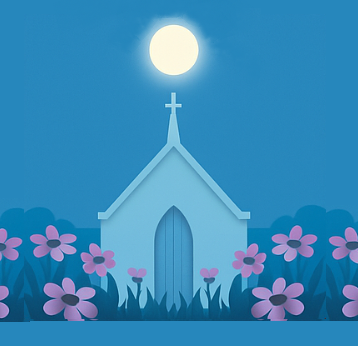

This whole idea started when I wanted to create a song in honor of the National Guard—I serve in the Guard
myself. I wasn’t a musician; I didn’t know anything about how to write or compose music. I had the idea, though,
and I researched how to turn it into a real song with my own music. That work became We Are the Guard.
After I debuted the song and shared it with others, some of my karaoke singers began asking for custom songs of
their own. I wrote three songs for friends, plus a few more drawn from me and my life. From there it grew into
what you see today: a business where I produce custom songs for people like you.
How this all works
This song began as a request from one of my karaoke singers who loved the music of Patsy Cline, Dolly Parton,
Tammy Wynette, Connie Smith, and Debby Boone. She asked me to bring her favorites together, not as a playlist, but
as one piece she could perform as if it were her own. I took the lyrics she loved, analyzed their themes, and
combined them with my own original lines and transitions to create a single, continuous narrative. Instead of
sounding like fragments stitched side by side, the result flows through a full emotional arc of promise, turmoil,
reconciliation, and hope. The listener doesn’t need to know the source songs at all — it plays like a cohesive,
original composition that stands on its own.
Below you’ll find four buttons, each one linked to a different version of this same song. The lyrics never change,
but the delivery does — and that’s the whole point. One version is arranged in a traditional country-western
style, another is shaped into a heartfelt country ballad, the third leans into a nostalgic country-western feel,
and the fourth carries a more melancholy tone. By clicking through and listening to each, you’ll hear how the
exact same words can take on entirely different emotions depending on the genre and arrangement. This shows you
the power of what I do: I don’t just write or arrange songs, I help shape them to match your story, in your tone,
and in your voice. When you hear the differences between these four versions, you’ll understand how flexible and
personal this process really is.
How it Sounds
One Song - Four Styles"
Click on the buttons below, listen to the different versions, and
imagine how your own story could be told in the style that fits you best.
A traditional country & western song

A slow, melancholy ballad
A nostalgic tune full of memories
A heartfelt storytelling ballad
When you’re ready, place your order and let me create a one-of-a-kind song that is truly yours.